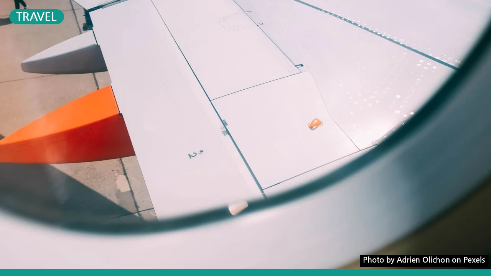

항공 마일리지 초보 가이드: 똑똑하게 모으고 쓰는 꿀팁 5가지
사진: Adrien Olichon / Pexels (무료 이미지, 출처 표기)
국내 항공 마일리지, 어떻게 모으고 사용해야 효율적일지 막막하셨나요? 비행기 티켓 한 번 끊으려 해도 왠지 복잡해 보이는 마일리지 시스템 때문에 손해보고 있는 기분이라면, 이 글이 답을 드릴 수 있습니다. 초보자도 쉽게 이해하고 바로 적용할 수 있는 국내 항공 마일리지 활용법을 지금부터 알려드립니다.
국내 항공 마일리지, 왜 모아야 할까요?
항공 마일리지는 단순히 비행기를 많이 타서 쌓는 포인트가 아닙니다. 적절히 활용하면 무료 항공권부터 좌석 업그레이드, 라운지 이용 등 다양한 혜택으로 여행의 질을 높여주는 유용한 자산이죠. 특히 국내선 항공권은 비교적 적은 마일리지로도 발권이 가능하여, 잘 모으면 국내 여행 경비를 크게 절감할 수 있습니다.
주요 국내 항공사 마일리지 적립 방식 비교
국내 주요 항공사인 대한항공과 아시아나항공은 각각 스카이패스와 아시아나클럽이라는 자체 마일리지 프로그램을 운영합니다. 각 항공사별 마일리지 적립과 사용 방식에는 차이가 있으므로, 주로 이용하는 항공사에 맞춰 전략을 세우는 것이 중요합니다. 2026년 9월 기준으로 양사의 일반적인 적립 방식을 비교해볼까요?
정확한 적립률과 제휴사 정보는 각 항공사 공식 홈페이지(대한항공 스카이패스, 아시아나항공 아시아나클럽)에서 최신 정보를 확인하는 것이 좋습니다.
마일리지, 이렇게 하면 더 많이 모을 수 있어요
단순히 비행기를 타는 것 외에도 마일리지를 빠르게 모으는 방법은 다양합니다. 특히 국내 여행객이라면 다음 세 가지 방법을 적극적으로 활용해 보세요.
- 항공사 제휴 신용카드 활용: 마일리지 적립 특화 신용카드를 사용하면 일상 소비에서도 꾸준히 마일리지를 쌓을 수 있습니다. 카드마다 적립률과 연회비, 사용처가 다르므로 자신의 소비 패턴에 맞는 카드를 선택하는 것이 중요합니다. 예를 들어, 특정 카드들은 해외 이용 시 더 높은 적립률을 제공하기도 합니다.
- 제휴 호텔 및 렌터카 이용: 항공사들은 호텔 체인, 렌터카 회사 등과 제휴를 맺고 있습니다. 여행 시 제휴 파트너를 이용하면 숙박비나 렌터카 비용으로도 마일리지를 적립할 수 있습니다. 예약 시 반드시 마일리지 회원 번호를 입력하거나 적립 여부를 확인하세요.
- 온라인 쇼핑 및 이벤트 참여: 일부 항공사는 제휴 쇼핑몰이나 온라인 서비스를 통해 마일리지 적립 기회를 제공하기도 합니다. 또한, 수시로 진행되는 프로모션이나 이벤트에 참여하는 것도 마일리지를 단기간에 모으는 효과적인 방법입니다. 각 항공사 뉴스레터 구독을 통해 이러한 소식을 받아보는 것이 좋습니다.
모은 마일리지, 현명하게 사용하는 방법
마일리지를 쌓는 것만큼 중요한 것이 현명하게 사용하는 것입니다. 자칫 잘못하면 마일리지의 가치를 제대로 누리지 못할 수 있습니다.
- 보너스 항공권 발권: 가장 일반적이고 효율적인 사용처입니다. 특히 성수기를 피해 비수기에 국내선 항공권을 발권하면 적은 마일리지로도 알찬 여행이 가능합니다. 미리 일정을 계획하여 여유 있게 예약하는 것이 유리합니다.
- 좌석 업그레이드: 이코노미 클래스 항공권을 구매한 후 마일리지를 사용하여 프레스티지 또는 퍼스트 클래스로 업그레이드하는 것도 좋은 방법입니다. 특히 장거리 국제선에서 업그레이드의 가치가 높지만, 국내선에서도 특별한 날 기분을 내기에 좋습니다.
- 마일리지 몰 상품 및 제휴사 이용: 항공사 웹사이트 내 '마일리지 몰'에서는 다양한 상품(호텔 숙박권, 외식 상품권 등)을 마일리지로 구매할 수 있습니다. 또한, 일부 제휴사 서비스(라운지 이용, 초과 수하물 결제 등)에도 마일리지를 활용할 수 있습니다. 단, 항공권 발권이나 좌석 업그레이드 대비 마일리지 가치가 다소 낮을 수 있으니 신중하게 비교 후 선택하세요.
마일리지 유효기간과 소멸, 놓치지 않는 주의사항
정성껏 모은 마일리지가 사라지지 않도록 주의해야 할 몇 가지 사항이 있습니다.
- 유효기간 확인 필수: 국내 항공 마일리지는 보통 10년의 유효기간을 가집니다. 하지만 2008년 이전에 적립된 마일리지나 특정 프로모션으로 받은 마일리지 등은 유효기간이 다르거나 없을 수도 있습니다. 잊지 않도록 정기적으로 각 항공사 홈페이지에서 본인의 마일리지 현황을 확인하는 습관을 들이세요.
- 가족 합산 제도 활용: 대부분의 항공사는 가족 간 마일리지 합산 제도를 운영합니다. 가족 구성원들의 마일리지를 합쳐 부족한 마일리지를 채워 보너스 항공권을 발권하거나 좌석을 업그레이드할 수 있습니다. 사전에 가족 등록을 해두는 것이 좋습니다.
- 소멸 전 사용 계획: 유효기간이 임박한 마일리지가 있다면 소멸되기 전에 작은 금액이라도 사용할 수 있는 방안을 모색해야 합니다. 국내선 항공권, 라운지 이용권, 마일리지 몰 상품 등 다양한 옵션을 고려해 보세요. 아까운 마일리지를 그대로 날리는 일은 없어야 합니다.
자주 묻는 국내 항공 마일리지 질문
마일리지 초보자들이 흔히 궁금해하는 질문들을 모아봤습니다.
- Q: 적립된 마일리지는 언제부터 사용할 수 있나요?
A: 일반적으로 항공 탑승 후 1~3일 이내에 마일리지가 적립됩니다. 제휴 카드 사용이나 기타 파트너를 통한 적립은 각 제휴사의 처리 기간에 따라 달라질 수 있습니다. 마일리지가 계정에 적립된 이후부터 사용이 가능합니다. - Q: 국내선 보너스 항공권 발권 시 필요한 마일리지는 얼마인가요?
A: 항공사, 노선, 성수기/비수기 여부에 따라 필요한 마일리지는 달라집니다. 2026년 9월 기준으로 대한항공의 경우 국내선 편도 기준 일반석은 약 5,000~7,000 마일리지, 아시아나항공은 약 5,000~7,000 마일리지가 필요합니다. 정확한 정보는 각 항공사 홈페이지의 보너스 항공권 차트를 확인하는 것이 가장 정확합니다. - Q: 마일리지로 세금과 유류할증료도 결제할 수 있나요?
A: 일반적으로 마일리지로는 순수 항공권 운임만 결제할 수 있으며, 공항세, 유류할증료 등은 별도로 현금이나 신용카드로 지불해야 합니다. 하지만 간혹 프로모션으로 전체 금액을 마일리지로 결제할 수 있는 경우도 있으니, 발권 시 안내를 잘 살펴보세요.
국내 항공 마일리지를 똑똑하게 활용하면 더욱 풍요로운 여행 경험을 만들 수 있습니다. 오늘부터 자신만의 마일리지 적립 및 사용 계획을 세워보세요. 정확한 사항은 이용하시려는 항공사의 공식 홈페이지에서 다시 확인하시길 권장합니다.
🔗 이 글도 함께 보면 좋아요: 여행 짐 싸기, 이것만 알면 끝! 계절별 필수템 완벽 가이드